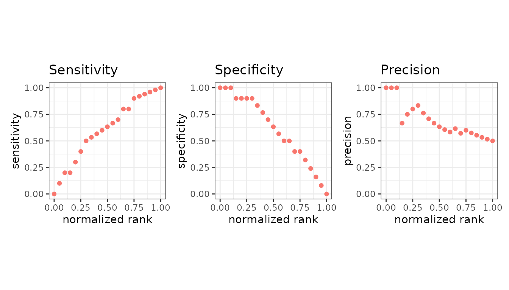
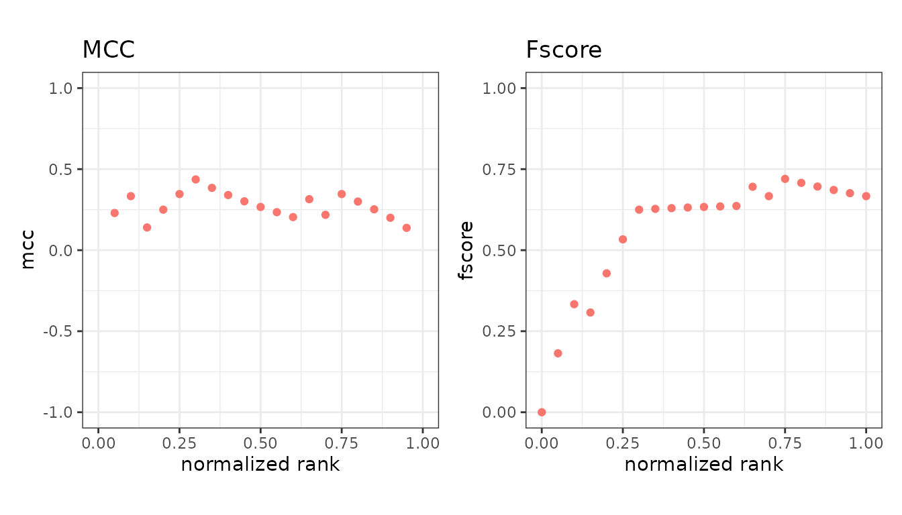
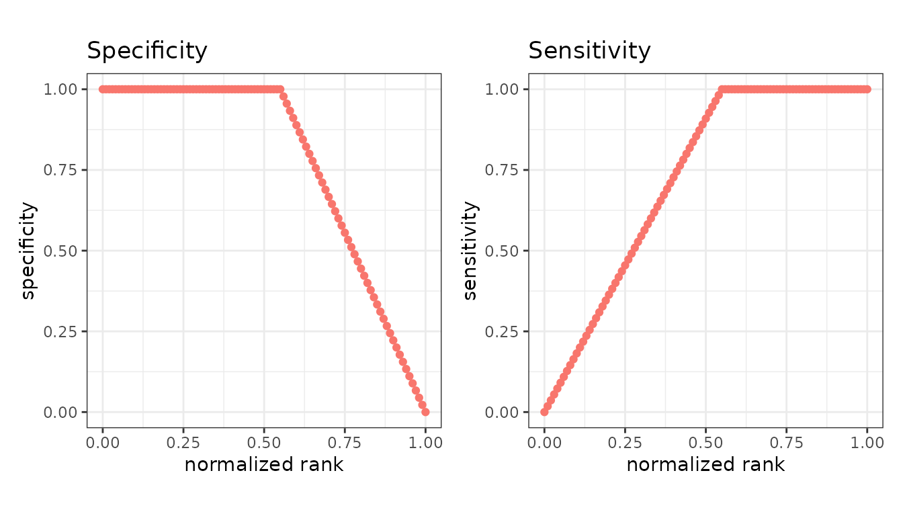
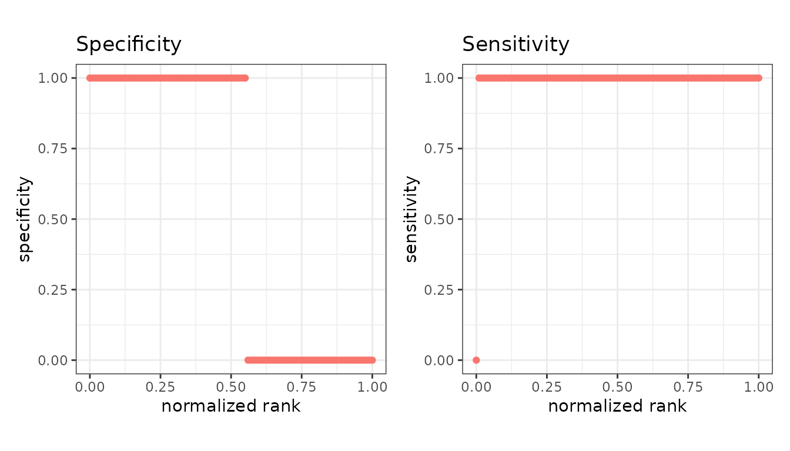
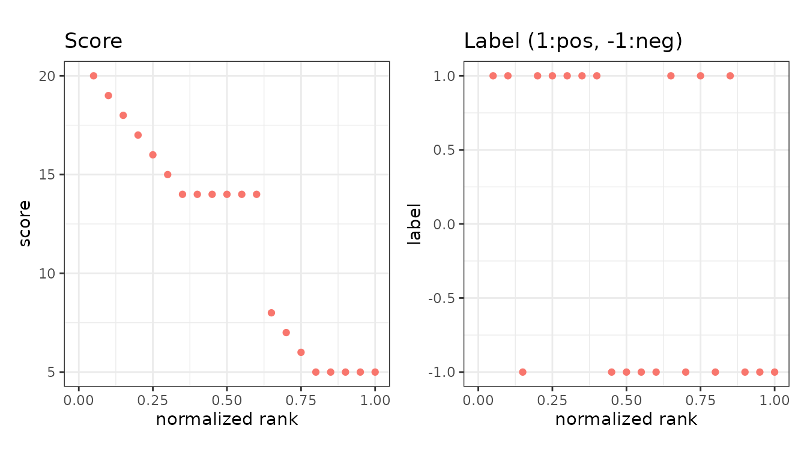

mode = "basic" plots evaluation metrics against the
normalized rank of the scores - that is, against how far down the ranked
list the cutoff sits.
library(precrec)
library(ggplot2)
points <- evalmod(scores = P10N10$scores, labels = P10N10$labels,
mode = "basic"
)Pick the panels
Name the metrics you want. Each becomes a panel.


Called with no metrics, you get all fourteen default panels at once, which is useful for a first look and too dense for a report.
Reading the x axis
The x axis runs from 0 to 1 and is the fraction of the dataset above the cutoff. At x = 0 nothing is predicted positive; at x = 1 everything is. So the left edge is the strictest cutoff and the right edge the most permissive.
This is what makes the panels comparable across datasets of different sizes.
The value plotted is the normalized rank. There is one
cutoff above every instance and one below all of them, so n
instances give n + 1 points, and the cutoff with
k instances above it sits at k / n.
n <- 5 # five instances, so six cutoffs
(0:n) / n
#> [1] 0.0 0.2 0.4 0.6 0.8 1.0Counting those points from 1 rather than from 0, the same thing is
(rank - 1) / (points - 1). Ranks count down from the best
score, so the highest-scoring instance is rank 1 and sits at the left
edge - the opposite direction to R’s rank(), which counts
up from the lowest score.
ties_method in evalmod() sets the rank that
tied instances receive, but the cutoffs still step one instance at a
time, so a run of tied scores spreads across consecutive x values rather
than sharing one.
Tied scores
A cutoff that falls inside a run of tied scores separates instances
that share a score, so no threshold produces it. precrec
has always filled those cutoffs by spreading the true and false
positives of the run evenly over them, which is the interpolation the
ROC and precision-recall curves need. For the basic metrics, which are
not interpolated, it can read strangely.
The clearest case is a classifier that is exactly right and says so with a single bit, so that every instance is tied with every other of its class:
set.seed(42)
perfect <- rbinom(100, 1, 0.5)
autoplot(
evalmod(scores = perfect, labels = perfect, mode = "basic"),
c("specificity", "sensitivity")
)
Sensitivity climbs across the positives instead of reaching 1 at once, which is the even spread rather than anything about the classifier.
basic_ties = "hold" gives every cutoff in a run the
counts it has once the whole run is taken, so tied instances share one
value of every metric:
autoplot(
evalmod(
scores = perfect, labels = perfect, mode = "basic",
basic_ties = "hold"
),
c("specificity", "sensitivity")
)
Each metric is now a step function that changes only where the score does. Note that specificity still falls to 0 at the right edge: at x = 1 every instance is predicted positive, so there are no true negatives left whatever the classifier is worth.
The two settings agree whenever the scores are all distinct, and
"split" is the default because it is what every published
precrec result was computed with. basic_ties
is read only by mode = "basic" - the curves keep their
interpolation.
Scores and labels
Two extra panels show the data behind the metrics rather than a metric: the score at each rank, and the observed label.

The label panel is the quickest way to see whether the positives really are concentrated at the top of the ranking.
Extra metrics
Anything beyond the default fourteen is requested with
metrics = and then plotted the same way.
extra <- evalmod(scores = P10N10$scores, labels = P10N10$labels,
mode = "basic", metrics = c("fpr", "lift")
)
autoplot(extra, c("fpr", "lift"))
Asking to plot a metric that was not calculated is an error that names the argument to add. See the metrics overview.